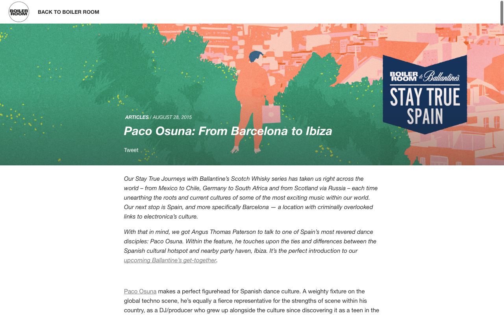

Paco Osuna: From Barcelona to Ibiza
{kind=link}

Our Stay True Journeys with Ballantine’s Scotch Whisky series has taken us right across the world – from Mexico to Chile, Germany to South Africa and from Scotland via Russia – each time unearthing the roots and current cultures of some of the most exciting music within our world. Our next stop is Spain, and more specifically Barcelona — a location with criminally overlooked links to electronica’s culture.
With that in mind, we got Angus Thomas Paterson to talk to one of Spain’s most revered dance disciples: Paco Osuna. Within the feature, he touches upon the ties and differences between the Spanish cultural hotspot and nearby party haven, Ibiza. It’s the perfect introduction to our upcoming Ballantine’s get-together.
Paco Osuna makes a perfect figurehead for Spanish dance culture. A weighty fixture on the global techno scene, he’s equally a fierce representative for the strengths of scene within his country, as a DJ/producer who grew up alongside the culture since discovering it as a teen in the late 80s. Osuna’s influence can be found at the opposite ends his country’s culture; the excess of Ibiza, as well the fiercely authentic scene in his hometown of Barcelona.
“It still feels powerful to keep doing what I like, and to give something for my city,” he says of Barcelona, the city where he was born, where he runs his Mindshake record label, and also the city where he runs Club4, the Thursday night party he originally began a decade ago alongside Sweden’s Adam Beyer and Christian Smith, as well Italy’s Marco Carola; international colleagues who just as much as Osuna were inspired by the special energy of Barcelona.
“If you create a movement, and the people start to follow you, sooner or later others will want to do something similar.”
“Back when Club4 began, it was the only club doing parties on Thursday night. Right now there’s seven or eight clubs throwing parties on a Thursday. If you create a movement, and the people start to follow you, sooner or later others will want to do something similar. It is good because we are not so big, but we had the power to move the scene forward.”
Osuna’s deep connection comes from his veteran status, as someone who has been there literally from the beginning; as a teen observing dance culture’s early forms as acid house blossomed in the late 80s, and following it obsessively throughout the 90s as it grew into the what we know as today. Osuna’s own status as a DJ and producer grew gradually and organically during this time, until the landmark moment at the decade’s end when he was summoned across to Balearic Sea for his residency at Amnesia Ibiza, which amazingly saw him opening the club seven nights a week.
Photograph no longer available
“Amnesia made me who I am right now,” he says. “My days as a resident really taught me a lot in terms of how to manage a dancefloor. To be able to play for different crowds and different kinds of people helped me understand how I can manage a dancefloor in each different moment and situation. So it was a really good school for me. And it’s also the place where I met Sven [Vath], where I met Richie [Hawtin], the people I’m still connect with today”.
Osuna forged a connection with Vath in the wild early days of Cocoon Ibiza, the first glitterings of techno on the island that he describes as, “like a ghetto with a special magic”; and this was also the period that saw Osuna’s eclectic DJing focus gradually towards minimalism, the aesthetic that defines his sound today. When Hawtin rolled the dice and shifted to Space Ibiza to launch his ENTER night in 2012, another landmark moment in the evolution of techno into the Ibiza juggernaut it is today, Osuna was asked to join as resident. And finally this year, Osuna returned to Amnesia, to support that other goliath techno night on the island, Marco Carola’s Music On.
“This was something that was really important, and a big step for my career in Ibiza, after of course being connected with ENTER the past few years. With Music On, it’s totally different. The responsibility, the sound, the crowd,” he says of the residency, which has seen him closing tackle the formidable task of closing the mainroom while Corolla mans the Terrace.
If Ibiza and Barcelona represent two distinct sides of Spanish dance culture, Osuna’s presence remains consistent and strong across both of them. However, he says it’s not difficult at all to locate the difference between the two. Above all is the international nature of clubbing in Ibiza, with a constantly revolving crowd that is jetting in and out of the country constantly.
“It’s definitely totally different,” he says. “Ibiza is very global. In one week, you can have different parties and everyday a totally different crowd, because people coming in and out constantly. But the Barcelona crowd is very proud about their own sound.”
Photograph no longer available
When we spoke to Osuna, he’d just returned from performing at two different festivals across Spain; “the country in Europe with the most festivals, besides Holland”. The proliferation of large-scale events, alongside the international draw of Ibiza, suggests the economics of Spanish dance culture are sound. However, it’s the authentic grittiness of Barcelona club culture where his passion for dance culture was born, and where he still finds his roots.
“Everything starts on my 13th birthday,” he says. His uncle just happened to work during the late 80s at Barcelona’s Studio 54; an old theatre that had been converted into a club with the intention of channelling the famous NYC disco of the same name. Osuna was allowed to observe from a window in his office, which ignited a passion in the teenager years before he was even old enough to partake.
“That moment, it really impressed me. One person with the power to send hundreds of other people crazy, and doing everything that he wanted.”
“The music started to be a style of life. Every Wednesday I was going to the record store, to take a look at what was arriving.”
While Studio 54 might have channelled the disco roots of its NYC namesake when it opened earlier in the decade, by the time Osuna began to frequent, acid house was beginning to take hold. Raul Orellana was one of the early DJs playing, who Osuna describes as “the maximum inspirer of my career, and the reason why my passion about music as a DJ was born,” and Osuna was given the chance to witness dance culture as it grew from its infancy.
“It was very unique. In the late 80s, acid house was the predominant style and almost a lifestyle. It turned into a cultural movement, with everybody dressing dress with T-shirts or pins with that smile,” he says, referring to the iconic acid house logo. “Not everybody knew what the meaning was, but everybody used to wear the symbol”.
“This was where my passion for the music started. Since that day, the scene was growing and growing and growing. And I realised eventually I had focussed completely my life on music.”
Watching the Barcelona scene evolve was a slow process, with a young Osuna ahead of the curve and obsessively following the DJs, with the scene still largely focussed on the clubs. He names Pepebilly and Cesar de Melero as other early influential DJs in Barcelona from the late 80s onwards, while Angel Molina and Sideral were other important names who began their ascension in the city later in the decade.
“A big change came in the beginning of the 90s in Barcelona, this was starting the afterhours,” Osuna says, naming Psicodromo as the first significant afterhours club that developed into an icon of techno throughout the 90s.
“And people at the afterhours also started to follow also the DJs. Some DJs were playing from 6am until 10am in one club, and then 2pm until 6pm in another club… and everyone was following the DJ. It was like a route, everybody was doing the same route in the same clubs, and it all became a complete connection between the crowd and the DJs. They were very, very nice days, everybody was having fun, and everything was new.”
Dance culture developed into a style of life in Barcelona. Osuna nominates Speedy J’s 1991 record “Pullover“ as the first that he ever purchased, and he watched his own obsessiveness also adopted by his compatriots who were running the club circuit every weekend.
“The music started to be a style of life. Every Wednesday I was going to the record store, to take a look at what was arriving. Friday and Saturday was spending time in the clubs and the afterhours and listening to what the DJ was playing. Trying to search for some of the records that he was playing and you didn’t have. Slowly it started to become a lifestyle.”
It was upon his move south to Valencia in the mid 90s where Osuna picked up DJing as a hobby himself, eventually scoring his first residency the city’s ACTV club, later becoming a fixture at other early institutions in the city like Universal and Heaven. Nonetheless, Osuna says he felt adrift in the city towards the end of the decade, with the city’s promoters not trusting in his sound. Things changed though when he was connected with Amnesia owner Martin Ferrer.
“Amnesia made me who I am right now. My days as a resident really taught me a lot in terms of how to manage a dancefloor.”
He describes his return to Amnesia Ibiza this year as like, “going back to my house.” He’d been entrusted at the end of the 90s with warming up the club seven nights a week, amongst all the different styles of music; a mammoth challenge formative in honing his craft. In addition to warming up house nights like La troya Asesina, and even prepping the energy for trance residencies like Godskitchen and Cream, he was also just in time to witness the genesis of techno on the island, with Cocoon starting its residency that year.
“It was a special moment that we had in those days,” he says of the time when techno was still the underdog minority on this island. “And this is the only thing that I miss in the techno scene now in Ibiza. At the end of the night all of the DJs were going to a villa, sharing ideas and talking, just being there and playing for days. The other promoters were fighting over making money, but our passion was the music, and we just wanted to have fun.”
“And the special moment we had in those days, we used to play for days and days. I remember one birthday of Richie, we was all DJing almost 6 days nonstop. And at the end of the night people asking you, ‘where is the afterhours, where is the villa’. It was very special and very unique.”
“You can be very famous in Spain, in England or in Germany. But if you don’t have a presence in Ibiza, then the rest of the world doesn’t even know you.”
This “magic ghetto” is a long way from the big money that techno commands on the island today, and Osuna confirms that unfortunately, “it’s not like this right now.”
“It still has the potential, because the DJs wanna go there and show their best. But now everybody wants to fight to see how big is his name is, or saying, ‘if you play for this guy you cannot play for me’. There’s too many politics. In the past it was more free, and more natural.”
Osuna speaks of the unmistakeable, and overbearing sway that Ibiza holds over wider dance culture, though without resentment, in recognition that the island stands on its own.
“You can be very famous in Spain, in England or in Germany. But if you don’t have a presence in Ibiza, then the rest of the world doesn’t even know you.”
Photograph no longer available
Osuna is ever reluctant to discuss any notion of a ‘Spanish sound’, preferring instead to emphasise techno’s inherent nature as a global artform. However, he’s quicker to articulate the famous Barcelona spirit, of which he’s done his part to help cultivate and strengthen over the years; particularly through the avenue of Club4 over the past decade, the Thursday night party he’s helped run at City Hall, a club he describes as “my home over the last 15 years.”
“The idea of the club started with me and Marco Corolla,” Osuna told Boiler Room. “I was living in Barcelona, and he was living in Naples, but he was here almost every week in town. And we were loving so much the city, the crowd, that we decided to do a night. And then Christian Smith and Adam Beyer joined us in this project, and this is why it was called Club4.
“Each of us was acting as resident, and warming up for the DJ that we were inviting. So it was a nice project, because it was a club made by DJs, for DJs. It was something beautiful from all of us who were loving this city, a gift to this fantastic crowd we had everytime we were playing.”
The first five or so years saw the four DJs taking turns as residents at the club every week, before the schedule inevitably began to strain for the three internationals, and they “slowly got tired”, as Osuna puts it, with all of their respective careers stepped up to the next level.
“Everybody started to get more busy,” he says. “Adam and Christian had to each come every two weeks from Sweden, and it was a bit of a pain in the ass for them because it was so far away. In the end it was only me who was taking care of the club.”
“There’s nothing better than feeling the complete freedom to do what you want, and knowing you have the respect of the people.”
Club4 celebrates its 10th anniversary this year, and Osuna describes it as a hotbed for that famous Barcelona spirit, with the city transcending all of the musical trends that have come and gone throughout both Ibiza as well as other cities like Madrid.
“When other form of music were very big in the rest of Spain, Barcelona always maintained its own sound without any commercial following. We are very proud of this freedom,” he says.
Something he speaks particularly proudly of are the parties where he’s neglected to announce the lineup, featuring a cast of big names that weren’t allowed to be announced beforehand due to contractual obligations, which saw Osuna relying on the trust of the crowd.
“There’s nothing better than feeling the complete freedom to do what you want, and knowing you have the respect of the people. The don’t care about the name, they want quality. They don’t wanna see so many ‘shows’, they just wanna go and enjoy the music. I’ve seen a few times, very famous DJs who were playing really badly, and people started to become very mad with them. It has a particular personality, the Barcelona crowd,” he laughs.
“And I really love that, and I respect that a lot, and it makes me feel so proud about Barcelona. So proud.”
– – –
Our broadcast from Barclona with Ballantine’s Scotch Whisky takes place on 17th September with Henrik Saiz, UNER, Coyu and Psyk joining Paco Osuna for the ride. Find out more here.